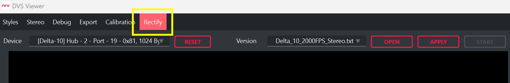
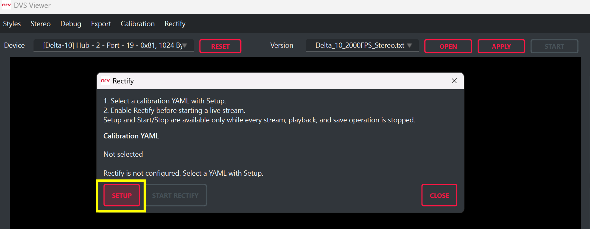
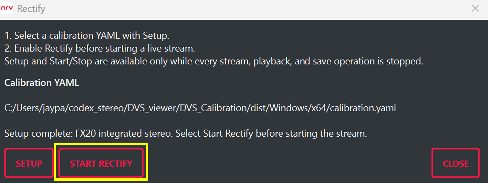
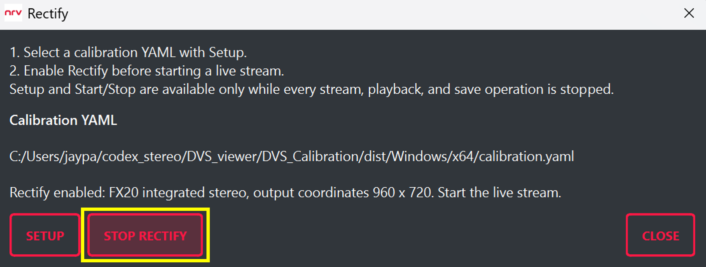

3. Viewer에서 정렬 사용하기
이 장에서는 Viewer에서 Rectify를 실제로 사용하는 순서를 설명합니다. 사용할 카메라를 선택한 뒤 캘리브레이션 YAML을 불러오고, Setup 완료를 확인한 다음 Start Rectify를 활성화합니다. 마지막으로 Viewer의 라이브 스트림을 시작해 보정 결과를 확인합니다.
3.1 Rectify 사용 전 준비
- Rectify 메뉴가 포함된 NRV DVS Viewer
- Viewer에 연결되어 사용할 장치로 선택된 NRV DVS 카메라
- 해당 카메라 구성에서 생성한 calibration.yaml
3.2 사용할 카메라를 선택하고 Rectify를 엽니다
Viewer 상단에서 사용할 카메라를 먼저 선택한 다음 Rectify를 누릅니다. 이후 Setup에서는 현재 선택한 카메라와 같은 구성으로 생성한 캘리브레이션 파일을 사용합니다. 모노 카메라에는 모노 캘리브레이션 결과를, 스테레오 카메라에는 스테레오 캘리브레이션 결과를 선택합니다.

3.3 캘리브레이션 YAML을 불러옵니다
Setup을 진행하기 전에 라이브 스트림, 파일 재생, 저장이 모두 중지되어 있는지 확인합니다. 실행 중인 기능이 있다면 먼저 중지한 뒤 Setup을 진행합니다.
1단계. Setup을 누른 뒤 현재 카메라에서 생성한 calibration.yaml을 선택합니다.

2단계. 파일을 정상적으로 불러오면 Setup complete가 표시되고 Start Rectify 버튼이 활성화됩니다.

Setup complete가 표시되지 않으면 스트림을 시작하지 말고, 선택한 카메라와 캘리브레이션 파일이 일치하는지 다시 확인합니다.
3.4 Rectify를 활성화하고 라이브 스트림을 시작합니다
Setup이 완료되면 Start Rectify를 누릅니다. 버튼이 Stop Rectify로 바뀌면 Rectify가 활성화된 상태입니다.

이후 Viewer의 일반 Apply / Start 버튼으로 카메라 스트림을 시작합니다. Preview와 저장 기능에는 별도의 추가 설정 없이 보정된 DVS 데이터가 사용됩니다.
Rectify를 중지할 때는 먼저 라이브 스트림과 저장을 중지한 뒤 Stop Rectify를 누릅니다.
3.5 라이브 결과를 확인합니다
같은 카메라 위치에서 Rectify OFF와 ON 결과를 비교합니다. 아래 예시에서는 모니터에 표시된 직선이 Rectify OFF 상태에서는 렌즈 왜곡 때문에 휘어 보이고, Rectify ON 상태에서는 더 곧게 보입니다.
스테레오 카메라에서는 좌·우 화면의 대응 구조가 같은 영상 행에 가까워졌는지도 함께 확인합니다.


현재 Rectify는 Viewer와 SDK의 소프트웨어 처리 경로에서 제공됩니다. 향후에는 카메라에서 직접 보정된 이벤트를 출력하는 방식도 지원할 계획입니다.
검색어와 일치하는 절 제목이 없습니다.